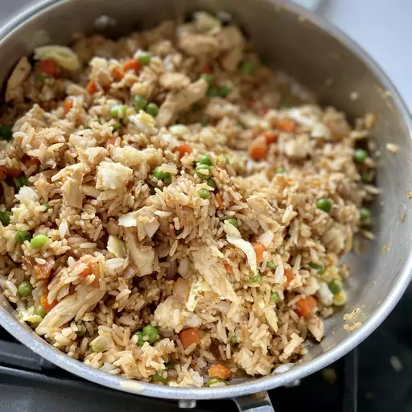

Description
This chicken fried rice recipe is very easy and tasty! It's basically cooked chicken, rice, soy sauce,
and shredded egg stir-fried together. For best results, use leftover cooked rice.
Ingredients:
1 tablespoon vegetable oil
2 cups cooked white rice, cold
1 cup cooked, chopped chicken meat
1 teaspoon ground black pepper
Steps:
Beat egg and water together in small bowl. Melt butter in a large skillet or wok over medium-low heat; add egg and cook without stirring, 1 to 2 minutes. Remove egg from skillet and cut into shreds; set aside.
Heat oil in the same skillet. Add onion; cook and stir until soft, about 3 minutes. Stir in rice, chicken, soy sauce, and pepper. Cook and stir for about 5 minutes; stir in shredded egg. Serve hot.